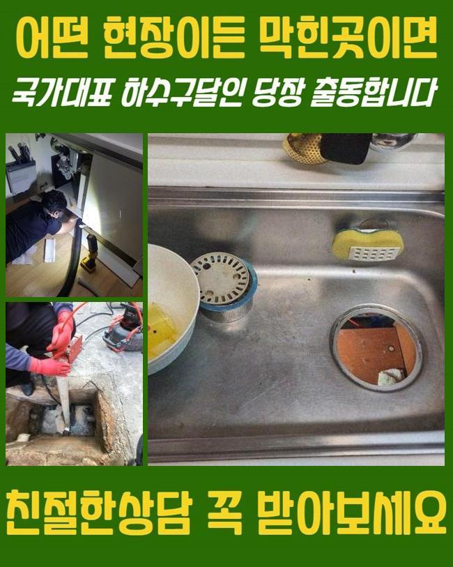
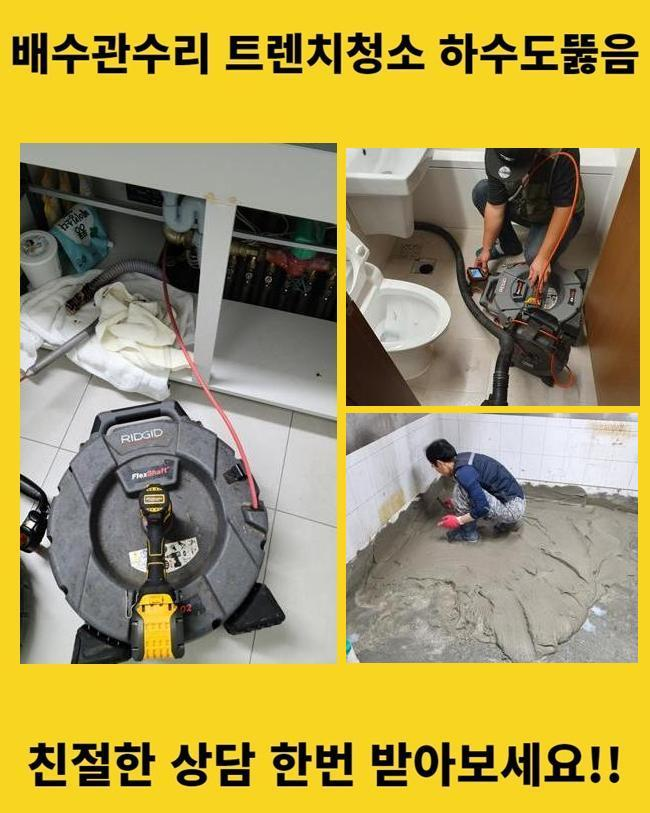
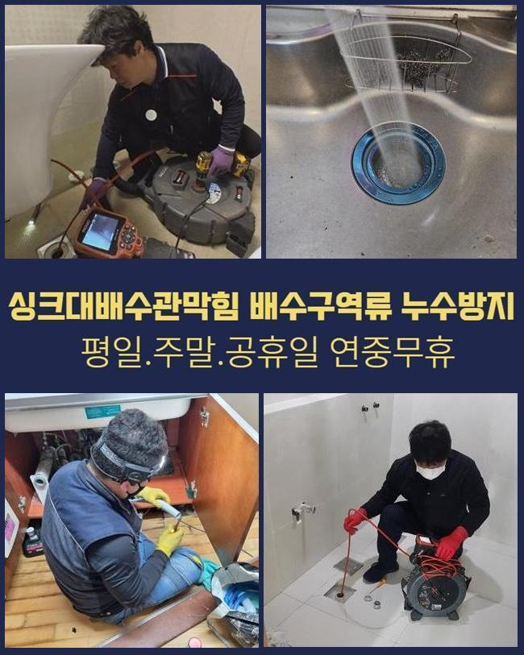
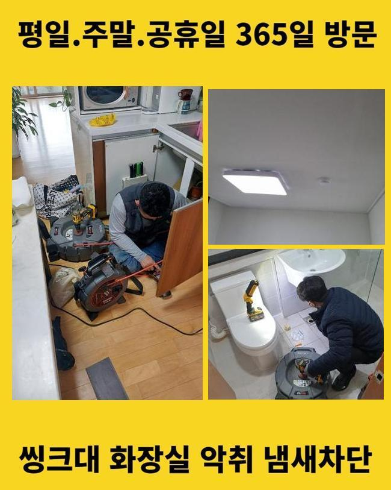
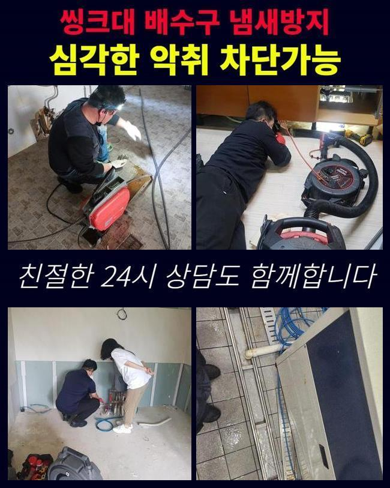

🏠 하남 배알미동싱크대배수관역류 광암동 하수구뚫어주는곳 배관공사
용인 싱크대막힘 전문 시공 후기

📋 작업 개요
- 위치: 용인
- 서비스 유형: 싱크대막힘, 하수구막힘, 배관막힘, 역류해결, 뚫는업체, 배관청소, 고압세척, 설비공사
- 작업 일시: 2025. 5. 16. 10:14
- 업체명: 하수구수사대 (010-5615-2118)
🔍 문제 상황
하남 배알미동싱크대배수관역류 광암동 하수구뚫어주는곳 배관공사
얼마전에 고객분의 집으로 내방드려 바깥에 위치한 하수관을 시정했는데요
전문적인 기계들을 통해서 안정적으로 청소를 했어요
물들이 안내려가는 결함이 발생된 건 약 1주일 정도 되었다고 합니다
배관의 경우 물들이 흘러가며 자연스럽게 이물들이 흐르는데 내부에서부터 계속해서 퇴적이 이뤄지게 되고 통로들이 막히게됩니다
잔해의 양들이 많거나 고착화가 이뤄진다면 심해지게될텐데요
이물질마다 모두 흘러가기에는 제약들이 존재하죠
해당 까닭들로 배수불가의 증상들이 야기된다면 스스로의 조치로서 개선들에 다가서지 못하는 사례들이 많죠
의뢰인분들이 자가조치로 평상시에 떠올리는것은 펑크린이나 식초와 같은것을 부으시는 것일텐데요
증상들이 나타나고 시간들이 도래하지않았을 경우엔 시도해봄직한 방법들이겠으나 외부라면 개선이 안됩니다
밖에서 증상이 보이면 자가조치로 조치해주는게 불가능에 가까워 전문인의 해결방안을 고려하시는게 좋답니다

🔎 원인 분석
💡 전문가 진단: 정밀 진단 장비를 사용하여 슬러지의 고착 여부를 판명하고 타격/세척 작업을 실시했습니다.
전문업체의 내방을 통해 지금 어떠한 영향으로 막히게되었는지 확실한 까닭들을 파악하는것은 기본이며 자가적인 조치가 아니라 뒤탈없이 이물을 청소해 지속적으로 컨디션에 있어서 유지하게끔 만들어드려요
이번 물들이 안내려가는 또한 저희업체에선 적재적소에 맞는 장비들을 활용하여 확실히 찌꺼기또한 제거하여 심층부까지 통수시켜주었어요
살펴보니 실외의 지점에서 심화된 양상이 나타났고 시정해보는것이 불가해보여 작업을 의뢰하셨어요
저희업체는 고객분의 일정이 괜찮으시면 바로 방문드려 해당 장소에서 일련의 과정들을 착수합니다
고객분의 전화를 받아보았을 땐 문제의스팟은 마당쪽이였어요
단독주택 외부라인에 설치된 하수구들이 막힌 탓에 강수 상황 시 넘쳐버리는 상황으로 파악되었죠
특히 우천상황에서는 쓰레기들이나 담배꽁초와 같이 이런저런 이물들이 흐르죠
바깥에서 물을 쓰면 갑작스럽게 관로로 천천히 빠지는 상태가 많아졌다고 합니다
처음에는 고객은 시간들이 흐름에 따라 나아질까 하여 수습을 미뤘다고 해요
예상치못한 시점에 미루어서 그런지 연거푸 수도들이 전혀 진전이 없었다고 해요
이후에 며칠간의 굉장히 느린 속도로 배수되는걸 인지하고서 얼른 시정해야겠다며 의뢰를 하셨습니다

🔧 작업 과정
마당이 단독으로 있어서 타인들에게 고충을 끼친 경우는 아니였지만 자가적으로 관리목적의 조치들이 요구되는 스팟이죠
그 즉시 방문이 실시되는 곳들이 잘 보이지 않아 난처하셨는데 저희들은 바로 가능했기에 의뢰를 바로 하셨어요
저희의경우 시기막론하고 공휴일에도 찾아가며 1년내내 청소해드리고 있기에 즉시 달려가 시공에 착수했죠
배수관은 어두워 두 눈을 통해 확인하기엔 제약이 있습니다
각 관로에 내시경장비를 삽입해 살펴보기 어려운 스팟에 오염원이 존재하는지 관찰하는데요
내시경장비로 누적된 이물들을 무슨 방법을 통해 긁어내야되는지 판단되면 실용적인 해결책을 선별해주는데요
일단은 샤프트도구를 써보고 집수라인 근방은 고압수청소를 쓰기로 결론 지었어요
샤프트기기는 긴 줄에 사슬모양의 노커부속품이 장착되어있는데 이 노커부속품이 벽측에 흡착된 단단한 이물을 탈락시키는 도구에요
상황에 알맞는 기기를 운용시켜 빈틈없이 결함들을 풀어냈습니다
작업시에 혹여 처리하지 못할 시 땡전 한 푼 안받는다고 안내드렸습니다
저희업체는 애초에 고객분이 알려주신 장소로 내방하는 경우 출장비들을 받는 일 없이 가므로 비용 관련 걱정을 내놓을 수 있게되고 뚫음이 불가하다면 금액들은 발생되지 않으므로 이런 사항도 참고해주세요
방문 시 작업하고 괄목할만한 개선없이 철수하여 출장금액들을 받는 절차는 단 한건도 없다고 약속합니다
방문드린 곳은 바깥쪽에 있던 곳들로서 흙들이 빠진 상태였고 축적된 슬러지들과 엉키며 점성이 짙고 움직이지 못할정도로 굳어졌습니다
단단히 뭉쳐져서 중심부터 통수길을 내주었어요
만성적인 고착이 발생해 일시에 해결되는것은 아니였으며 깊숙한 부분까지 제거해주어야 했기에 역방향으로 고수압의 장비들을 사용해주어야되는 상황들이었습니다
고압노즐을 통해서 빈틈없이 세척이 필요했던 상황들이었습니다
내시경카메라를 사용하면서 깊은 지점까지 작업해주었지만 물들이 제대로 흐르는 상태가 아니었습니다
그도 그럴것이 외부유입물과 함께 기름때들이 길목마다 큰 범위들에 걸쳐 축적되어 고착된 형상을 하고있었어요


✅ 작업 완료
석션기 등이 닿을 수 없는 스팟으로 고압수청소가 필요했죠
이후에 세척과정을 거쳐 기름성분을 배출해내며 연결부분쪽에 흡착된 이물들을 탈락시켜 청소했는데요
안정적으로 제거시키니 약간이나마 협소했던 배관으로 배수들이 이루어지게 되었고 안쪽과 이어진 구간들도 통수들이 진행되었어요
이 상황들을 의뢰자께 설명드리고 모든 작업은 종료되었죠
재발하는 상황을 막기위하여 이용해주실때 계속해서 관리해보시고 만일 일년이 지나지않아 반복하여 골치아프게한다면 저희들이 사후관리를 실시하고 있으니 염려마세요!



⚠️ 주방 싱크대 배관 막힘 예방 수칙
- ✅ 기름기가 묻은 식기나 프라이팬은 설거지 전 키친타올로 반드시 기름때를 닦아내세요.
- ✅ 주기적으로 싱크대 개수대에 뜨거운 물을 가득 받아 한 번에 내려 배관 내부 기름을 씻어내세요.
- ✅ 배수구 거름망을 미세한 필터로 사용하시고 음식물 찌꺼기가 틈으로 새어 들지 않게 관리하세요.
- ✅ 베이킹소다와 식초를 뜨거운 물과 함께 일주일에 한 번씩 부어주면 배관 살균과 막힘 예방에 좋습니다.
💡 핵심 정리
- 확실한 장비 작업(내시경 점검 및 샤프트 스케일링)으로 원인을 뿌리 뽑습니다.
- 작업 후 1년 이내에 동일한 부위 재발 시 100% 무상 A/S 서비스를 보장합니다.
- 서울 · 경기 · 인천 전 지역에 24시간 언제든 긴급 출동할 수 있도록 항시 대기 중입니다.
❓ 자주 묻는 질문 (FAQ)
🚨 용인 싱크대막힘 문제로 고민이신가요?
정확한 원인 진단과 확실한 시공으로 재발 없는 해결을 약속드립니다.
24시간 긴급 출동 | 서울 · 경기 · 인천 전지역 | 1년 내 재발 시 무상 A/S